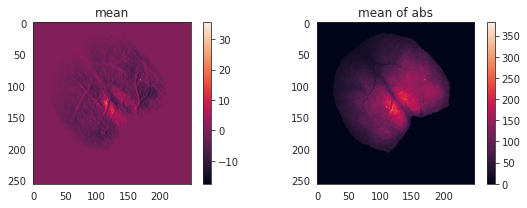
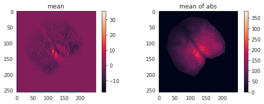
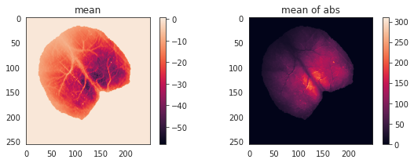
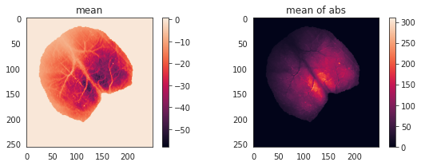

February, 16th 2021¶
Motivation: Correlation/network analysis on Ca data.
Results: In this document I focus on Ca sinals.
# HIDE CODE
import re
import os
import numpy as np
import pandas as pd
import nibabel as nib
from scipy.stats import pearsonr
from os.path import join as pjoin
from tqdm.notebook import tqdm
import matplotlib.pyplot as plt
import seaborn as sns
sns.set_style('whitegrid')
base_dir = '/home/hadi/Documents/Ca-fMRI'
raw_dir = pjoin(base_dir, 'raw')
processed_dir = pjoin(base_dir, 'processed')
os.makedirs(processed_dir, exist_ok=True)
Process data¶
# HIDE CODE
shared_names = []
for file_name in sorted(os.listdir(raw_dir)):
if '.gz' not in file_name:
continue
meta = file_name.split('_')
sub = next(filter(lambda x: 'sub' in x, meta))
ses = next(filter(lambda x: 'ses' in x, meta))
run = next(filter(lambda x: 'run' in x, meta))
task = next(filter(lambda x: 'task' in x, meta))
shared_names.append('_'.join([sub, ses, task, run]))
shared_names = sorted(list(np.unique(shared_names)))
# process and save files
for keyword in tqdm(shared_names):
selected_files = [f for f in os.listdir(raw_dir) if keyword in f]
bold_file_name = next(filter(lambda x: 'bold' in x, selected_files))
meta = bold_file_name.split('_')
sub = next(filter(lambda x: 'sub' in x, meta))
ses = next(filter(lambda x: 'ses' in x, meta))
run = next(filter(lambda x: 'run' in x, meta))
task = next(filter(lambda x: 'task' in x, meta))
key = '_'.join([sub, ses, run, task])
# bold
with open(pjoin(raw_dir, bold_file_name)) as f:
data = nib.load(f.name).get_fdata()
save_filename = pjoin(processed_dir, key + '_bold.npy')
np.save(save_filename, data)
# ca
ca_files = [item for item in selected_files if 'ca' in item]
ca_data_list = []
for ca_file_name in ca_files:
with open(pjoin(raw_dir, ca_file_name)) as f:
ca_data_list.append(nib.load(f.name).get_fdata())
data = np.concatenate(ca_data_list, axis=-1)
save_filename = pjoin(processed_dir, key + '_ca.npy')
np.save(save_filename, data)
Plots of Ca traces¶
Just like before, I’m plotting all traces to visually inspect quality. These data that I selected for the analysis did not have the preprocessing error.
# HIDE CODE
expt_duration = 600 # 600 seconds
ca_frequency = 10
exclude_seconds = 50
for load_filename in sorted(filter(lambda x: 'ca' in x, os.listdir(processed_dir))):
ca = np.load(pjoin(processed_dir, load_filename), mmap_mode='r')
start = ca.shape[-1] - ((expt_duration - exclude_seconds) * ca_frequency)
end = ca.shape[-1]
# print("file name: {:s}\tshape: {}\ttrange included: {}"
# .format(load_filename, ca.shape, [start, end]))
trange = range(start, end)
ca = ca[..., 0, trange]
print('-' * 100)
sns.set_style('whitegrid')
plt.figure(figsize=(13, 8))
plt.subplot(311)
intvl = range(0, end - start)
xticks = [item for item in intvl if item % (len(intvl) // 11) == 0]
xtick_labels = [(item + start) // ca_frequency for item in xticks]
plt.plot(ca[128, 90, intvl])
plt.xticks(xticks, xtick_labels)
plt.xlabel('t (s)')
plt.subplot(312)
intvl = range(0, 2000)
xticks = [item for item in intvl if item % (len(intvl) // 10) == 0]
xtick_labels = [(item + start) // ca_frequency for item in xticks]
plt.plot(ca[128, 90, intvl])
plt.xticks(xticks, xtick_labels)
plt.xlabel('t (s)')
plt.subplot(313)
intvl = range(0, 500)
xticks = [item for item in intvl if item % (len(intvl) // 10) == 0]
xtick_labels = [(item + start) // ca_frequency for item in xticks]
plt.plot(ca[128, 90, intvl], label='xy = [128, 90]')
plt.plot(ca[128, 128, intvl], label='xy = [128, 128]')
plt.plot(ca[80, 128, intvl], label='xy = [80, 128]')
plt.xticks(xticks, xtick_labels)
plt.xlabel('t (s)')
plt.legend(loc='upper left')
plt.suptitle(load_filename, fontsize=15)
plt.tight_layout()
plt.show()
sns.set_style('white')
plt.figure(figsize=(8, 3))
plt.subplot(121)
plt.imshow(ca.mean(-1))
plt.colorbar()
plt.title('mean')
plt.subplot(122)
plt.imshow(np.abs(ca).mean(-1))
plt.colorbar()
plt.title('mean of abs')
plt.tight_layout()
plt.show()
print('-' * 100, '\n\n\n\n')
----------------------------------------------------------------------------------------------------

----------------------------------------------------------------------------------------------------
----------------------------------------------------------------------------------------------------
 

----------------------------------------------------------------------------------------------------
----------------------------------------------------------------------------------------------------
----------------------------------------------------------------------------------------------------
----------------------------------------------------------------------------------------------------
 

----------------------------------------------------------------------------------------------------
----------------------------------------------------------------------------------------------------
----------------------------------------------------------------------------------------------------
----------------------------------------------------------------------------------------------------

----------------------------------------------------------------------------------------------------
----------------------------------------------------------------------------------------------------


----------------------------------------------------------------------------------------------------
Simple analysis¶
I choose a dataset that looks OK from subject named sub-SLC08.
# HIDE CODE
files = sorted(list(filter(lambda x: 'ca' in x and 'sub-SLC06' in x and 'rest' in x, os.listdir(processed_dir))))
expt_duration = 600 # 600 seconds
ca_frequency = 10
exclude_seconds = 50
data_list = []
for load_filename in files:
ca = np.load(pjoin(processed_dir, load_filename), mmap_mode='r')
start = ca.shape[-1] - ((expt_duration - exclude_seconds) * ca_frequency)
end = ca.shape[-1]
data_list.append(ca[..., 0, range(start, end)])
ca = np.concatenate(data_list, axis=-1)
files, ca.shape
(['sub-SLC06_ses-1_run-1_task-rest_ca.npy',
'sub-SLC06_ses-1_run-3_task-rest_ca.npy',
'sub-SLC06_ses-1_run-5_task-rest_ca.npy',
'sub-SLC06_ses-1_run-7_task-rest_ca.npy'],
(256, 250, 22000))
More errors in processing¶
ca.shape
(256, 250, 22000)
plt.imshow(ca[..., 18090])
plt.colorbar()
<matplotlib.colorbar.Colorbar at 0x7fe18926b5b0>
np.unravel_index(np.argmin(ca), ca.shape)
(139, 124, 18090)
intvl = range(18090-400, 18090+400)
plt.plot(intvl, ca[127, 113, intvl])
plt.axvline(18090, color='red', ls='--', lw=2)
<matplotlib.lines.Line2D at 0x7fe1891abc70>
Correlation analysis¶
Take a source signal from one of the “voxels” and compute its correlation with every other point. We should not call these voxels because this is different than fMRI data. But then if not voxels, what should we call them for Ca data?
Anyway, I take signal from point (128, 128) on cortex surface and compute its correlation with every other point. Here is how this correlation result looks like.
bad_x_indices = np.where(ca.mean(-1).mean(0) == 0)[0]
bad_y_indices = np.where(ca.mean(-1).mean(1) == 0)[0]
ca_reduced = np.delete(np.delete(ca, bad_x_indices, axis=1), bad_y_indices, axis=0)
ca.shape, ca_reduced.shape
((256, 250, 22000), (190, 186, 22000))
# HIDE CODE
source = (95, 95)
corrs = np.zeros(ca_reduced.shape[:-1])
for i in tqdm(range(ca_reduced.shape[0]), leave=False):
for j in range(ca_reduced.shape[1]):
r, p = pearsonr(ca_reduced[i, j, :], ca_reduced[source[0], source[1], :])
if not np.isnan(r):
corrs[i, j] = r
plt.figure(figsize=(13, 4))
plt.subplot(121)
plt.imshow(corrs, vmin=-1, vmax=1, cmap='gist_rainbow')
plt.plot(source[0], source[1], color='b', marker='o')
plt.colorbar()
plt.subplot(122)
plt.imshow(corrs)
plt.plot(source[0], source[1], color='b', marker='o')
plt.colorbar()
plt.show()
/home/hadi/.local/lib/python3.8/site-packages/scipy/stats/stats.py:3845: PearsonRConstantInputWarning: An input array is constant; the correlation coefficent is not defined.
warnings.warn(PearsonRConstantInputWarning())

plt.figure(figsize=(13, 4))
plt.subplot(121)
plt.imshow(corrs, vmin=0, vmax=1, cmap='nipy_spectral')
plt.plot(source[0], source[1], color='r', marker='x', markersize=10)
plt.colorbar()
plt.subplot(122)
plt.imshow(corrs, vmin=-1, vmax=0, cmap='nipy_spectral')
plt.plot(source[0], source[1], color='r', marker='x', markersize=10)
plt.colorbar()
plt.show()

‘Accent’, ‘Accent_r’, ‘Blues’, ‘Blues_r’, ‘BrBG’, ‘BrBG_r’, ‘BuGn’, ‘BuGn_r’, ‘BuPu’, ‘BuPu_r’, ‘CMRmap’, ‘CMRmap_r’, ‘Dark2’, ‘Dark2_r’, ‘GnBu’, ‘GnBu_r’, ‘Greens’, ‘Greens_r’, ‘Greys’, ‘Greys_r’, ‘OrRd’, ‘OrRd_r’, ‘Oranges’, ‘Oranges_r’, ‘PRGn’, ‘PRGn_r’, ‘Paired’, ‘Paired_r’, ‘Pastel1’, ‘Pastel1_r’, ‘Pastel2’, ‘Pastel2_r’, ‘PiYG’, ‘PiYG_r’, ‘PuBu’, ‘PuBuGn’, ‘PuBuGn_r’, ‘PuBu_r’, ‘PuOr’, ‘PuOr_r’, ‘PuRd’, ‘PuRd_r’, ‘Purples’, ‘Purples_r’, ‘RdBu’, ‘RdBu_r’, ‘RdGy’, ‘RdGy_r’, ‘RdPu’, ‘RdPu_r’, ‘RdYlBu’, ‘RdYlBu_r’, ‘RdYlGn’, ‘RdYlGn_r’, ‘Reds’, ‘Reds_r’, ‘Set1’, ‘Set1_r’, ‘Set2’, ‘Set2_r’, ‘Set3’, ‘Set3_r’, ‘Spectral’, ‘Spectral_r’, ‘Wistia’, ‘Wistia_r’, ‘YlGn’, ‘YlGnBu’, ‘YlGnBu_r’, ‘YlGn_r’, ‘YlOrBr’, ‘YlOrBr_r’, ‘YlOrRd’, ‘YlOrRd_r’, ‘afmhot’, ‘afmhot_r’, ‘autumn’, ‘autumn_r’, ‘binary’, ‘binary_r’, ‘bone’, ‘bone_r’, ‘brg’, ‘brg_r’, ‘bwr’, ‘bwr_r’, ‘cividis’, ‘cividis_r’, ‘cool’, ‘cool_r’, ‘coolwarm’, ‘coolwarm_r’, ‘copper’, ‘copper_r’, ‘crest’, ‘crest_r’, ‘cubehelix’, ‘cubehelix_r’, ‘flag’, ‘flag_r’, ‘flare’, ‘flare_r’, ‘gist_earth’, ‘gist_earth_r’, ‘gist_gray’, ‘gist_gray_r’, ‘gist_heat’, ‘gist_heat_r’, ‘gist_ncar’, ‘gist_ncar_r’, ‘gist_rainbow’, ‘gist_rainbow_r’, ‘gist_stern’, ‘gist_stern_r’, ‘gist_yarg’, ‘gist_yarg_r’, ‘gnuplot’, ‘gnuplot2’, ‘gnuplot2_r’, ‘gnuplot_r’, ‘gray’, ‘gray_r’, ‘hot’, ‘hot_r’, ‘hsv’, ‘hsv_r’, ‘icefire’, ‘icefire_r’, ‘inferno’, ‘inferno_r’, ‘jet’, ‘jet_r’, ‘magma’, ‘magma_r’, ‘mako’, ‘mako_r’, ‘nipy_spectral’, ‘nipy_spectral_r’, ‘ocean’, ‘ocean_r’, ‘pink’, ‘pink_r’, ‘plasma’, ‘plasma_r’, ‘prism’, ‘prism_r’, ‘rainbow’, ‘rainbow_r’, ‘rocket’, ‘rocket_r’, ‘seismic’, ‘seismic_r’, ‘spring’, ‘spring_r’, ‘summer’, ‘summer_r’, ‘tab10’, ‘tab10_r’, ‘tab20’, ‘tab20_r’, ‘tab20b’, ‘tab20b_r’, ‘tab20c’, ‘tab20c_r’, ‘terrain’, ‘terrain_r’, ‘turbo’, ‘turbo_r’, ‘twilight’, ‘twilight_r’, ‘twilight_shifted’, ‘twilight_shifted_r’, ‘viridis’, ‘viridis_r’, ‘vlag’, ‘vlag_r’, ‘winter’, ‘winter_r’
_ = plt.hist(corrs.flatten(), bins=[0.1, 0.2, 0.3, 0.4, 0.5, 0.6,0.7,0.8,0.9,1.0])

Downsample¶
size = 4
widths = [int(np.ceil(item / size)) for item in ca_reduced.shape[:2]]
nt = ca_reduced.shape[-1]
downsampled = np.zeros((size, size, nt))
for i in range(size):
for j in range(size):
data = ca_reduced[widths[0]*i:widths[0]*(i+1), widths[1]*j:widths[1]*(j+1), :]
num_nonzero = sum(data.mean(-1).flatten() != 0)
if num_nonzero > 0:
downsampled[i, j, :] = data.reshape(-1, nt).sum(0) / num_nonzero
else:
downsampled[i, j, :] = 0.
downsampled.shape
(4, 4, 22000)
sns.set_style('white')
plt.imshow(downsampled.mean(-1))
plt.colorbar()
<matplotlib.colorbar.Colorbar at 0x7fe17a6a2ca0>

df = pd.DataFrame()
for i in range(size):
for j in range(size):
if downsampled.mean(-1)[i, j] != 0:
k = '({:d},{:d})'.format(i, j)
data_dict = {
'id': [k] * nt,
't': np.arange(nt),
'val': downsampled[i, j],
}
df = pd.concat([df, pd.DataFrame.from_dict(data_dict)])
df = df.pivot(index='t', columns='id', values='val')
plt.figure(figsize=(15, 12))
sns.heatmap(df.corr(), cmap='nipy_spectral')
plt.yticks(rotation=0);

df
| id | val | |
|---|---|---|
| 0 | (0,0) | 8.461822 |
| 1 | (0,0) | 13.391186 |
| 2 | (0,0) | 11.587382 |
| 3 | (0,0) | 4.885253 |
| 4 | (0,0) | 6.686709 |
| ... | ... | ... |
| 21995 | (3,2) | 87.576575 |
| 21996 | (3,2) | 76.222168 |
| 21997 | (3,2) | 9.900515 |
| 21998 | (3,2) | -13.068788 |
| 21999 | (3,2) | 12.868840 |
330000 rows × 2 columns
np.where(downsampled.mean(-1) == 0)
(array([0, 0, 0, 1, 6, 6, 7, 7, 7, 7]), array([0, 6, 7, 7, 6, 7, 0, 5, 6, 7]))
df = pd.DataFrame(downsampled.reshape(-1, nt).T)
df.shape
(22000, 16)
corr = df.corr()
corr.shape
(16, 16)
plt.imshow(corr, vmin=0, vmax=1, cmap='nipy_spectral')
plt.colorbar()
<matplotlib.colorbar.Colorbar at 0x7fe18032b1c0>
Discussion¶
…